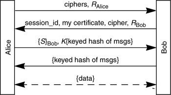
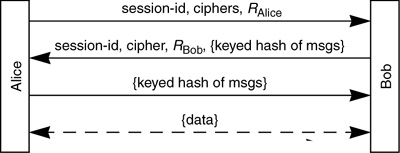

Networking Security Networking Security Networking Security Security Networking Security Networking Security Networking Charlie Kaufman Radia Perlman Mike Speciner Prentice Hall Network Security: Private Communication in a Public World, Second Edition
19.5. Session Resumption
SSL/TLS assumes that a session is a relatively long-lived thing from which many "connections" can be cheaply derived. This is because it was designed to work with HTTP 1.0, which has a tendency to open a lot of TCP connections between the same client and server (one per item on the web page).
The per-session master secret is established using expensive public key cryptography. Multiple connections can be cheaply derived from that master secret by doing a handshake that involves sending nonces (so that session keys will be unique), but avoids public key operations.
SSL/TLS allows session resumption, but it is not stateless at Bob as in Lotus Notes (see §16.9 Session Resumption). If Bob wants to allow a session to resume, i.e., wants to be able to have multiple connections based on that session, he sends the client (in message 2) a session_id (which is not secret), and stores (session_id, master secret). If Alice presents (in message 1) a session_id that Bob remembers, they can skip the public key portion of the handshake. The shortened handshake will only succeed if Alice and Bob remember the same master secret. If Bob does not recognize the session_id, he returns a different session_id in message 2 (or leaves it out entirely if he wants to make the session non-resumable).


It might seem odd for Alice, when resuming the session, to send a set of ciphers rather than just the cipher used in the session. Even if Bob has lost state about the session, wouldn't he make the same choice of cipher, given the same choices, as he made when the session was created? Not necessarily, because perhaps his policy has changed. So Alice is allowed, when resuming a session, to send a set of choices, but the set must at least contain the cipher that had been chosen previously for that session.
|